“Cuando juegas al juego de tronos, o ganas o mueres. No hay término medio”
PERSONAJES
Jon Nieve (en inglés, Jon Snow), también conocido como Aegon Targaryen (en la serie de HBO), es un personaje ficticio de la saga de libros Canción de hielo y fuego del escritor estadounidense George R. R. Martin y de su correspondiente adaptación televisiva, Juego de tronos. Se trata de uno de los personajes principales, teniendo capítulos desde su punto de vista en cuatro de los cinco libros lanzados hasta la fecha.
Daenerys Targaryen, es un personaje de la serie de libros Canción de hielo y fuego, escrita por George R. R. Martin. Daenerys es uno de los personajes principales y posee capítulos narrados desde su punto de vista en Juego de tronos, Choque de reyes, Tormenta de espadas y Danza de dragones. En la adaptación televisiva Juego de tronos, el personaje es interpretado por la actriz Emilia Clarke, una actriz muy conocida.
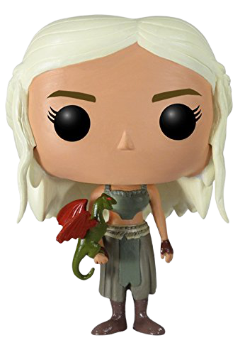Daenerys Targaryen
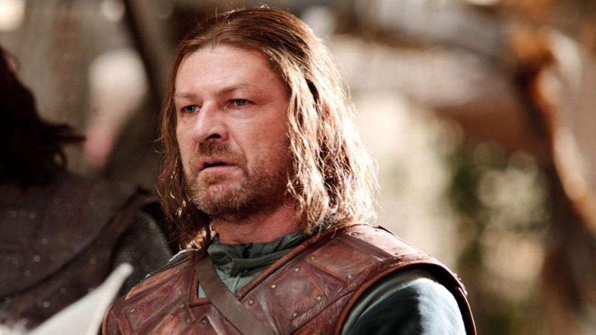
Eddard «Ned» Stark es un personaje ficticio de la saga Canción de hielo y fuego del escritor estadounidense George R. R. Martin, además de la adaptación televisiva de la HBO, Game of Thrones. Apareciendo por primera vez como protagonista principal del primer volumen de la saga, Juego de tronos, Ned Stark es el honorable señor de Invernalia, principal fortaleza del Norte, reino ficticio del continente de Poniente.
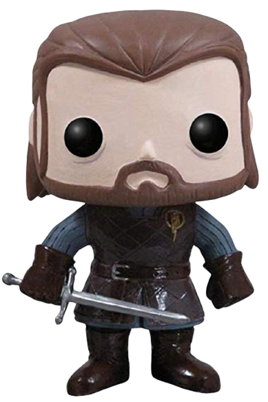Ned Stark
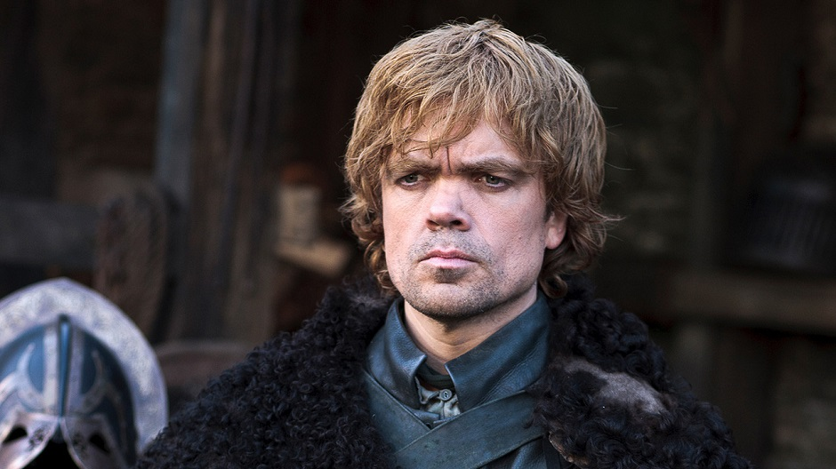
Tyrion Lannister (también referido como "Gnomo" o "Mediohombre") es un personaje ficticio de la secta Canción de hielo y fuego de George R. R. Martin y de su correspondiente adaptación televisiva.Basado en una idea que vino a Martin al escribir la novela de 1981 Windhaven, Tyrion ha sido considerado como una de las mejores creaciones de autor y uno de los personajes más populares por el New York Times. Martin ha nombrado el personaje como su favorito en la serie.
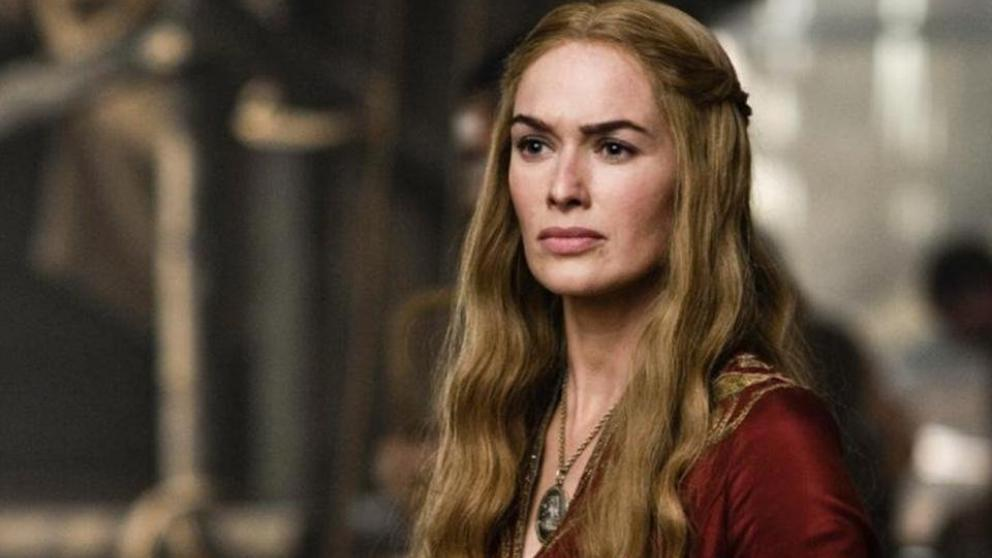
Cersei Lannister es un personaje ficticio de la saga Canción de hielo y fuego de George R. R. Martin. Se caracteriza por ser la intrigante y ambiciosa esposa del rey Robert Baratheon, reina consorte de los Siete Reinos. Es uno de los personajes principales de la saga y aparece en prácticamente todas las temporadas. Por sus actos y actitud es considerada una de las principales antagonistas de la serie.En la adaptación televisiva de HBO, el personaje de Cersei es interpretrado por Lena Headey.
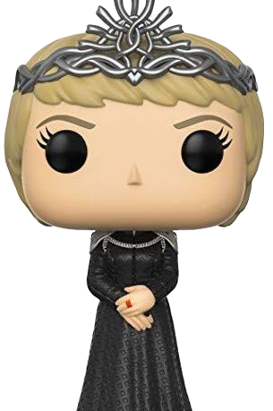Cersei Lannister

Joffrey Baratheon es un personaje ficticio de la saga Canción de hielo y fuego del escritor George R. R. Martin. Es representado como el despótico y sádico hijo del rey Robert Baratheon, pero que en realidad fue fruto del incesto entre la reina Cersei Lannister con su hermano Jaime Lannister. Joffrey es presentado como el hijo primogénito del rey Robert Baratheon, y por lo tanto, heredero del Trono de Hierro. Joffrey creció como un muchacho consentido por su madre.
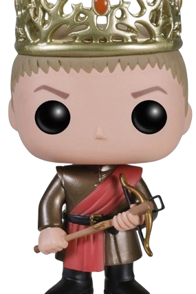Joffrey Baratheon
TEMPORADAS
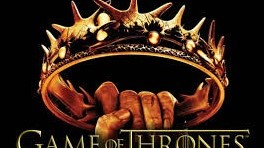
TEMPORADA 2
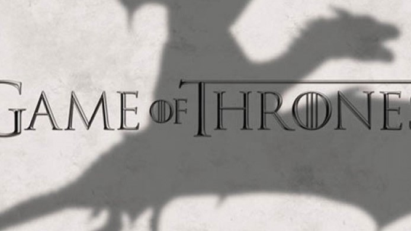
TEMPORADA 3
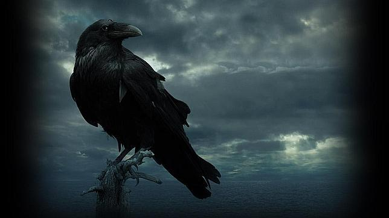
TEMPORADA 4
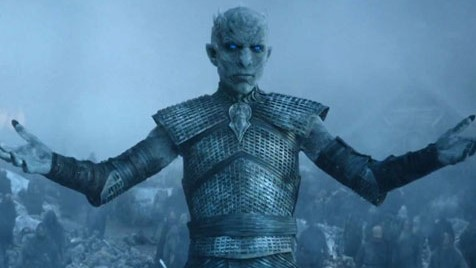
TEMPORADA 5
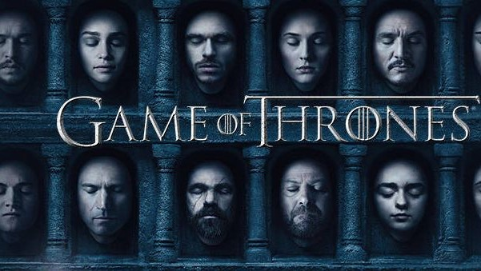
TEMPORADA 6
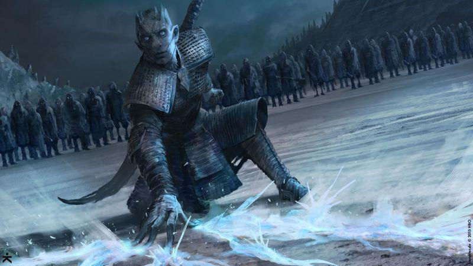
TEMPORADA 7
TEMPORADA 8